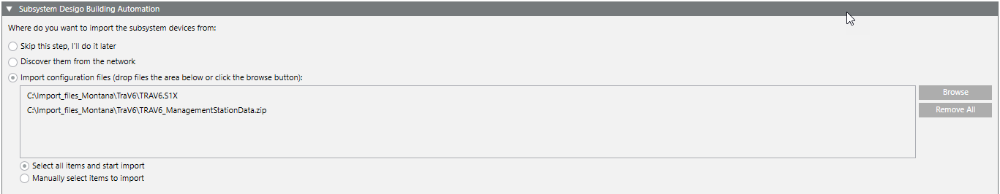

Set Import Procedure
- You are in step 6 of 8.
- Select the option:
- Scan devices if imported online.
- Automatic import if files are imported from an export file:
a. Click Browse.
b. Select the import file.
c. Click Open.
d. (Optional) Select check box Import all elements. The files need not be selected manually in step 9a if the check box is selected.
- Click Next Page
 .
.
Note: The import is performed in step 9.